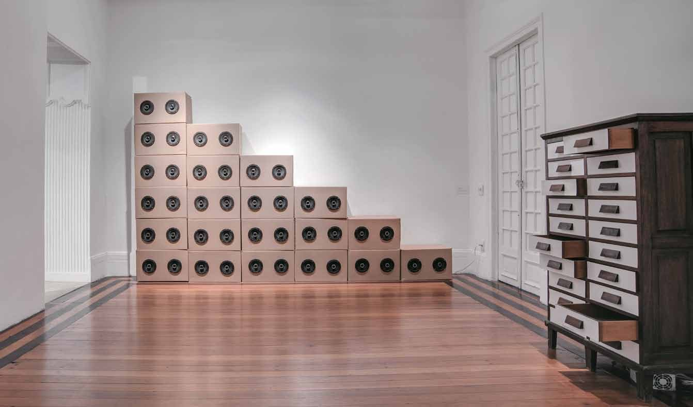
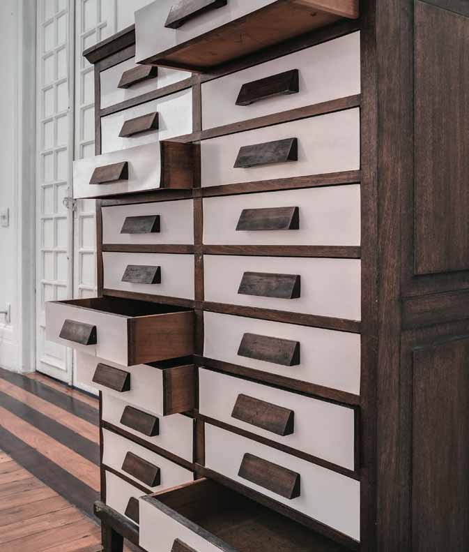
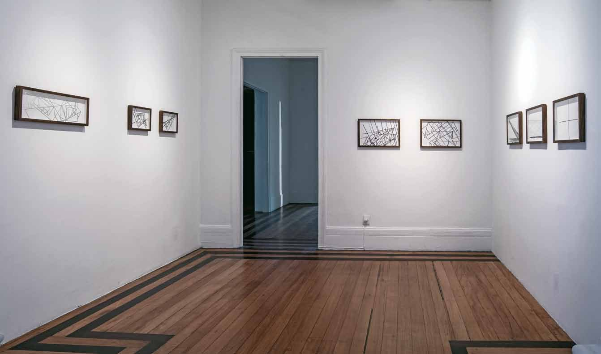

Sonar
Exposição individual na Casa de Cultura Laura Alvim, Rio de Janeiro, 2013, com curadoria de Glória Ferreira. Reuniu obras sonoras e apresentou pela primeira vez a instalação Turbina.
- Local
- Casa de Cultura Laura Alvim, Rio de Janeiro
- Exposição
- Sonar (2013)
- Curadoria
- Glória Ferreira
- Fotos
- Mario Grisolli
- Imprensa
- O Globo, 16 dez. 2013



